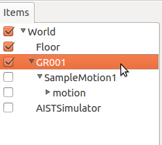
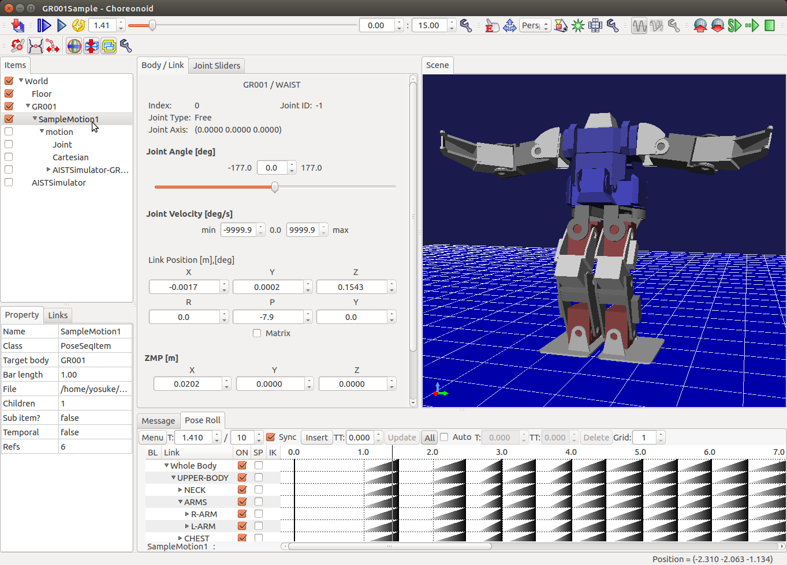

Creating motion sequence¶
This tutorial explains how to configure and apply motion sequence editing function in Choreonoid.
Load sample project¶
Select “File” -> “Open Project” menu item and open “GR001Sample.cnoid” under “share/project” folder.
Configuration for your own project¶
If you want to edit motion sequence of your own robot model, apply following configuration.
From main menu:
- Create World item (select “File” -> “New...” -> “World”).
- Load model item (select “File” -> “Open...” -> “OpenHRP Model File”).
- Create PoseSeq item (select “File” -> “New...” -> “PoseSeq”).
If you require physics simulation during the motion editing, add following additional items:
- Load floor model item (select “File” -> “Open...” -> “OpenHRP Model File”).
- Create AISTSimulator item (select “File” -> “New...” -> “AISTSimulator”).
In item panel:
Drag and drop the items to following order (model and simulator item must belong to the world item and poseseq item must belong to model item).
Basic motion sequence editing process¶
Open pose roll view by selecting “View” -> “Show View” -> “Pose Roll” menu item.
Click and check PosSeq item.
Click “Play Animation” button to play the motion.
Click “Insert” button on the pose roll panel to insert new key frames.
